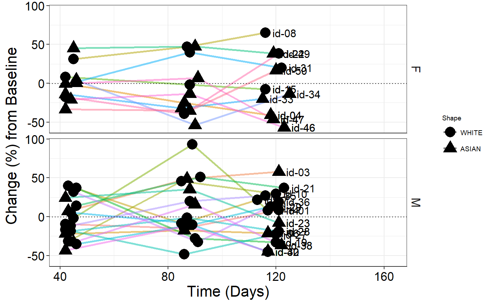

g_spiderplot.RdCreate a spiderplot for Early Development Visualization
g_spiderplot(marker_x, marker_y, line_colby = NULL, marker_color = NULL, marker_color_opt = NULL, marker_shape = NULL, marker_shape_opt = NULL, marker_size = 6, datalabel_txt = NULL, facet_rows = NULL, facet_columns = NULL, vref_line = NULL, href_line = NULL, x_label = "Time (Days)", y_label = "Change (%) from Baseline", show_legend = FALSE, draw = TRUE, newpage = TRUE)
| marker_x | dataframe with 2 columns, column 1 is the vector of x values and column 2 is the vector to group the points together (default should be defined as USUBJID) |
|---|---|
| marker_y | vector of y values |
| line_colby | vector defines by what variable plot is color coded, default here is NULL |
| marker_color | vector defines by what variable points are color coded, , default here is NULL |
| marker_color_opt | vector defines marker color code, default here is NULL |
| marker_shape | vector defines by what variable points are shape coded, , default here is NULL |
| marker_shape_opt | vector defines marker shape code, default here is NULL |
| marker_size | size of markers in plot, default here is NULL |
| datalabel_txt | list defines text (at last time point) and flag for an arrow annotation (per defined variable) - elements must be labeled txt_ann/mrkr_all/mrkr_ann txt_ann - text annotation next to final data point (for text annotation) mrkr_all - vector of ID's (for annotation marker) mrkr_ann - vector of ID's (subset of mrkr_all) where arrow is desired to indicate any study interim points |
| facet_rows | vector defines what variable is used to split the plot into rows, default here is NULL |
| facet_columns | vector defines what variable is used to split the plot into columns, default here is NULL |
| vref_line | value defines vertical line overlay (can be a vector), default here is NULL |
| href_line | value defines horizontal line overlay (can be a vector), default here is NULL |
| x_label | string of text for x axis label, default is time |
| y_label | string of text for y axis label, default is % change |
| show_legend | boolean of whether marker legend is included, default here is FALSE |
ggplot object
library(random.cdisc.data) library(plyr)#>#> #> #>#>#> #>#> #> #> #>library(dplyr) require(lemon) library(colorspace) atr <- left_join(radam("ATR", N=10),radam("ADSL", N=10))#>dat <- atr %>% filter(PARAMCD == "SUMTGLES") #test changing where annotation marker lies #dat <- dat[-4, ] p <- g_spiderplot(marker_x = data.frame(day = dat$TUDY, groupby = dat$USUBJID), marker_y = dat$PCHG, line_colby = dat$USUBJID, marker_color = dat$RACE, #marker_color_opt = c("ASIAN" = "yellow", "NATIVE HAWAIIAN OR OTHER PACIFIC ISLANDER" = "red", # "BLACK OR AFRICAN AMERICAN" = "black", "WHITE" = "green", # "AMERICAN INDIAN OR ALASKA NATIVE" = "blue"), marker_shape = dat$RACE, #marker_shape_opt = c("ASIAN" = 1, "NATIVE HAWAIIAN OR OTHER PACIFIC ISLANDER" = 2, # "BLACK OR AFRICAN AMERICAN" = 3, "WHITE" = 4, # "AMERICAN INDIAN OR ALASKA NATIVE" = 5), marker_size = 5, datalabel_txt = list(txt_ann = dat$USUBJID), #datalabel_txt = list(txt_ann = dat$USUBJID, mrkr_all = dat$USUBJID, mrkr_ann = c("id-1", "id-4", "id-7")), #datalabel_txt = list(mrkr_all = dat$USUBJID, mrkr_ann = c("id-2", "id-4", "id-7")), facet_rows = dat$SEX, facet_columns = dat$ARM, vref_line = c(10, 37), href_line = -0.3, x_label = "Time (Days)", y_label = "Change (%) from Baseline", show_legend = FALSE) #test discrete x-axis points dat2 <- dat %>% arrange(TUDY) %>% mutate(day = as.character(TUDY)) %>% as.data.frame() g_spiderplot(marker_x = data.frame(day = as.factor(dat2$day), groupby = dat2$USUBJID), marker_y = dat2$PCHG, line_colby = dat2$USUBJID, marker_color = dat2$USUBJID, #marker_color_opt = map_marker_color, marker_shape = dat2$RACE, #marker_shape_opt = map_marker_shape, marker_size = 5, datalabel_txt = list(txt_ann = dat2$USUBJID, mrkr_all = dat2$USUBJID, mrkr_ann = c("id-2", "id-4", "id-7")), #datalabel_txt = list(mrkr_all = dat2$USUBJID, mrkr_ann = c("id-2", "id-4", "id-7")), facet_rows = dat2$SEX, facet_columns = dat2$ARM, vref_line = c("10", "37"), href_line = -0.3, x_label = "Time (Days)", y_label = "Change (%) from Baseline", show_legend = FALSE)